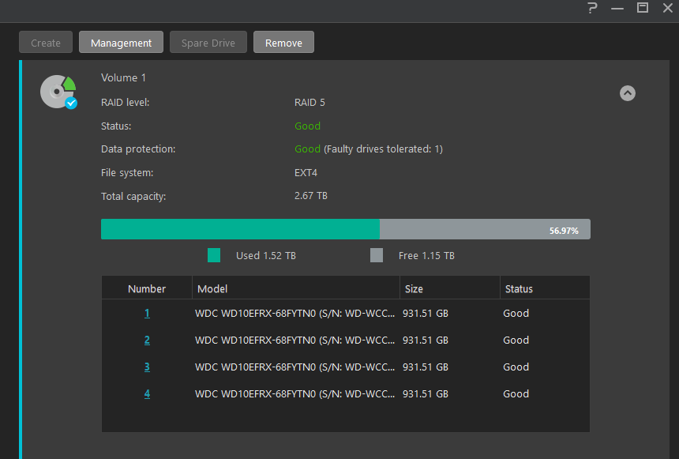

Homelab Media Server
Intro
Hello everyone. In this tutorial I wanted to share my setup for my home automation.
It took me a while to get everything going and working properly, but I'm currently at a point where everything is working and I'm happy with the result, so I wanted to share it with you 😊
My setup
- HP EliteBook G2 as my home server (running Ubuntu)
- Asustor AS1004t v2 NAS for my storage (RAID5, 4x1TB HDDs)
- My ISP's router.
Goal
- Automatically download my media
- Automatically rename the media and organize in folders
- Run everything from Dockers
Copyright Notice
I will be using usenet and torrents to download shows, movies and books. I am not responsible for whatever you'll do with this setup. If piracy is illegal in your country and you're afraid of actions that can be taken by your ISP, I suggest you won't go through with it.
With that being said, you can also mask your traffic behind a VPN of your choice, which I won't be covering in this tutorial.
Apps we'll use
- Radarr - managing movies
- Sonarr - managing tv shows
- Plex - my media player of choice. A lot of people would also recommend Jellyfin which is open-source and great as well 😊
- SABnzbd - my binary newsgroup downloader of choice.
- qBitTorrent - torrent downloader of choice.
How-To
Docker & Docker-Compose
I will be sharing my docker-compose file which will include all of the relevant apps for this project. You will need to install both Docker and Docker Compose on your server of choice.
Installing Docker and Docker-Compose is as simple as it gets: - Docker - Docker-Compose
NAS Setup and paths
-
Create a volume in your NAS. In my case, I created a RAID5 volume with 4 disks 
Info
- The mount command can vary between systems.
- Don't forget to change the server's IP to yours.
- If you didn't name your folder
data, change that to whatever you named your folder.
-
Go to your server and mount the network path.
- run
mount -o v3 192.168.1.14:/volume1/data /mnt/data - edit
/etc/fstabto have the drive mount itself on boot:192.168.1.14:/volume1/data /mnt/data nfs defaults 0 0 - run
mount --all
- run
-
You should now see your drive mounted:
❯ df -h Filesystem Size Used Avail Use% Mounted on /dev/sda5 234G 23G 200G 11% / 192.168.1.14:/volume1/data 2.7T 1.6T 1.2T 57% /mnt/data ...Tip
From here we will be doing exactly as stated under TRaSH guides. Please more about it if you wish to understand why.
-
Open your mount, and create folders using the following structure:
-
In the ends, once you go into
/mnt/data, the folder should look like this:
Portainer
I chose Portainer to avoid managing my Docker containers via CLI. Installing Portainer is very simple, you can choose the method of installation from their website.
After installing it, make sure it's running:
root@server:~# docker ps
CONTAINER ID IMAGE COMMAND CREATED STATUS PORTS NAMES
de5b28eb2fa9 portainer/portainer-ce:2.9.3 "/portainer" 2 weeks ago Up 9 days 0.0.0.0:8000->8000/tcp, :::8000->8000/tcp, 0.0.0.0:9443->9443/tcp, :::9443->9443/tcp portainer
Compose-File
The following docker-compose file is configured exactly as it should, we will make some changes after running it:
Information
PUID- Usually you can leave this on1000PGID- Same asPUID.- You can check double check by running:
id $user - Under
volumes, change/mnt/data:/datato reflect your setup. If you mounted/mnt/datalike me, you can leave it as is. - Repeat the above step for each container that has it!
- Change
TZ=to reflect your timezone. You can find the value for your location here. - It doesn't matter too much where to store the config files for each container, I personally do
/docker/appdata/{app}:/config. Instead of{app}, I change it to the name of the app/container I'm using.
version: "3.2"
services:
radarr:
container_name: radarr
image: cr.hotio.dev/hotio/radarr:latest
restart: unless-stopped
logging:
driver: json-file
ports:
- 7878:7878
hostname: radarr
environment:
- PUID=1000
- PGID=1000
- TZ=Asia/Jerusalem
volumes:
- /etc/localtime:/etc/localtime:ro
- /docker/appdata/radarr:/config
- /mnt/data:/data
sonarr:
container_name: sonarr
image: cr.hotio.dev/hotio/sonarr:latest
restart: unless-stopped
logging:
driver: json-file
ports:
- 8989:8989
hostname: sonarr
environment:
- PUID=1000
- PGID=1000
- TZ=Asia/Jerusalem
volumes:
- /etc/localtime:/etc/localtime:ro
- /docker/appdata/sonarr:/config
- /mnt/data:/data
bazarr:
container_name: bazarr
image: cr.hotio.dev/hotio/bazarr:latest
restart: unless-stopped
logging:
driver: json-file
ports:
- 6767:6767
hostname: bazarr
environment:
- PUID=1000
- PGID=1000
- TZ=Asia/Jerusalem
volumes:
- /etc/localtime:/etc/localtime:ro
- /docker/appdata/bazarr:/config
- /mnt/data/media:/data/media
qbittorrent:
container_name: qbittorrent
image: cr.hotio.dev/hotio/qbittorrent
ports:
- "8080:8080"
hostname: qbittorrent
environment:
- PUID=1000
- PGID=1000
- UMASK=002
- TZ=Asia/Jerusalem
volumes:
- /docker/appdata/qbittorrent:/config
- /mnt/data/torrents:/data/torrents
plex:
container_name: plex
image: cr.hotio.dev/hotio/plex
# ports:
# - "32400:32400"
hostname: plex
network_mode: host
environment:
- PUID=1000
- PGID=1000
- UMASK=002
- TZ=Asia/Jerusalem
- PLEX_CLAIM
- ADVERTISE_IP
- ALLOWED_NETWORKS
- PLEX_PASS=no
volumes:
- /docker/appdata/plex:/config
- /docker/appdata/plex/transcode:/transcode
- /mnt/data/media:/data/media
sabnzbd:
image: lscr.io/linuxserver/sabnzbd:latest
container_name: sabnzbd
environment:
- PUID=1000
- PGID=1000
- TZ=Asia/Jerusalem
volumes:
- /docker/appdata:/config
- /mnt/data/usenet:/data/usenet
ports:
- 8081:8081
hostname: sabnzbd
restart: unless-stopped
jackett:
container_name: jackett
image: cr.hotio.dev/hotio/jackett
ports:
- "9117:9117"
hostname: jackett
environment:
- PUID=1000
- PGID=1000
- UMASK=002
- TZ=Asia/Jerusalem
volumes:
- /docker/appdata/jackett:/config
overseerr:
image: sctx/overseerr:latest
container_name: overseerr
environment:
- LOG_LEVEL=debug
ports:
- 5055:5055
hostname: overseerr
volumes:
- /docker/appdata/overseerr:/app/config
restart: unless-stopped
Apps in the compose file:
- Radarr - Managing movies.
- Sonarr - Managing TV shows.
- Bazarr - Managing subtitles for movies and tv shows.
- Plex - Media player for all of our downloads.
- qBitTorrent - Torrent downloading client.
- Sabnzbd - Binary newsreader, our usenet downloader.
- Jackett - This is our torrent indexer. it essentialy makes queries to torrent sites and retrives the data from them to pass on to radarr/sonarr.
- Overseerr - Requests manager for our media. Instead of going to any of the *arr apps, we can request media straight from this great UI.
Configure the apps
Why?
I encourage you to go an read more about Hardlinks to understand why we're configuring how media server this way.
We will be configuring the apps based on TRaSH Guides guidelines.
For Radarr, Sonarr, Sabnzbd and qBittorrent, make sure you configure it as listed here.